손해평가사 (2020-06-20 기출문제)
1과목: 상법(보험편)
1. 보험계약의 의의와 성립에 관한 설명으로 옳지 않은 것은?
- 보험계약의 성립은 특별한 요식행위를 요하지 않는다.
- 보험계약의 사행계약성으로 인하여 상법은 도덕적 위험을 방지하고자 하는 다수의 규정을 두고 있다.
- 보험자가 상법에서 정한 낙부통지 기간 내에 통지를 해태한 때에는 청약을 거절한 것으로 본다.
- 보험계약은 쌍무ㆍ유상계약이다.
(정답률: 82%)

2. 다음 ( )에 들어갈 기간으로 옳은 것은?
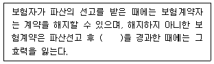
- 10일
- 1월
- 3월
- 6월
(정답률: 77%)
3. 일부보험에 관한 설명으로 옳지 않은 것은?
- 일부보험은 보험금액이 보험가액에 미달하는 보험이다.
- 특약이 없을 경우, 일부보험에서 보험자는 보험금액의 보험가액에 대한 비율에 따라 보상 할 책임을 진다.
- 일부보험에 관하여 당사자간에 다른 약정이 있는 때에는 보험자는 실제 발생한 손해 전부를 보상할 책임을 진다.
- 일부보험은 당사자의 의사와 상관없이 발생할 수 있다.
(정답률: 60%)
4. 손해액의 산정에 관한 설명으로 옳지 않은 것은?
- 보험자가 보상할 손해액은 그 손해가 발생한 때와 곳의 가액에 의하여 산정하는 것이 원칙이다.
- 손해액 산정에 관하여 당사자간에 다른 약정이 있는 때에는 신품가액에 의하여 산정할 수 있다.
- 특약이 없는 한 보험자가 보상할 손해액에는 보험사고로 인하여 상실된 피보험자가 얻을 이익이나 보수를 산입하지 않는다.
- 손해액 산정에 필요한 비용은 보험자와 보험계약자가 공동으로 부담한다.
(정답률: 86%)
5. 보험자가 손해를 보상할 경우에 보험료의 지급을 받지 아니한 잔액이 있을 경우와 관련하여 상법 제677조(보험료체납과 보상액의 공제)의 내용으로 옳은 것은?
- 보험자는 보험계약에 대한 납입최고 및 해지예고 통보를 하지 않고도 보험계약을 해지할 수 있다.
- 보험자는 보상할 금액에서 지급기일이 도래하지 않은 보험료는 공제할 수 없다.
- 보험자는 보험금 전부에 대한 지급을 거절할 수 있다.
- 보험자는 보상할 금액에서 지급기일이 도래한 보험료를 공제할 수 있다.
(정답률: 70%)
6. 보험계약에 관한 설명으로 옳은 것은?
- 보험의 목적의 성질, 하자 또는 자연소모로 인한 손해는 보험자가 보상할 책임이 없다.
- 피보험자가 보험의 목적을 양도한 때에는 양수인은 보험계약상의 권리와 의무를 승계한 것으로 간주한다.
- 손해방지의무는 보험계약자에게만 부과되는 의무이다.
- 보험의 목적이 양도된 경우 보험의 목적의 양도인 또는 양수인은 보험자에 대하여 30일 이내에 그 사실을 통지하여야 한다.
(정답률: 76%)
7. 보험목적에 관한 보험대위(잔존물대위)의 설명으로 옳지 않은 것은?
- 일부보험에서도 보험금액의 보험가액에 대한 비율에 따라 잔존물대위권을 취득할 수 있다.
- 잔존물대위가 성립하기 위해서는 보험목적의 전부가 멸실하여야 한다.
- 피보험자는 보험자로부터 보험금을 지급받기 전에는 잔존물을 임의로 처분할 수 있다.
- 잔존물에 대한 권리가 보험자에게 이전되는 시점은 보험자가 보험금액을 전부 지급하고, 물권변동 절차를 마무리한 때이다.
(정답률: 57%)
8. 화재보험에 관한 설명으로 옳지 않은 것은? (다툼이 있으면 판례에 따름)
- 화재보험에서는 일반적으로 위험개별의 원칙이 적용된다.
- 화재가 발생한 건물의 철거비와 폐기물처리비는 화재와 상당인과관계가 있는 건물수리비에 포함된다.
- 화재보험계약의 보험자는 화재로 인하여 생긴 손해를 보상할 책임이 있다.
- 보험자는 화재의 소방 또는 손해의 감소에 필요한 조치로 인하여 생긴 손해에 대해서도 보상할 책임이 있다.
(정답률: 68%)
9. 화재보험증권에 관한 설명으로 옳은 것은?
- 화재보험증권의 교부는 화재보험계약의 성립요건이다.
- 화재보험증권은 불요식증권의 성질을 가진다.
- 화재보험계약에서 보험가액을 정했다면 이를 화재보험증권에 기재하여야 한다.
- 건물을 화재보험의 목적으로 한 경우에는 건물의 소재지, 구조와 용도는 화재보험증권의 법정기재사항이 아니다.
(정답률: 70%)
10. 집합보험에 관한 설명으로 옳은 것은? (다툼이 있으면 판례에 따름)
- 집합보험에서는 피보험자의 가족과 사용인의 물건도 보험의 목적에 포함된다.
- 집합보험 중에서 보험의 목적이 특정되어 있는 것을 담보하는 보험을 총괄보험이라고 하며, 보험목적의 일부 또는 전부가 수시로 교체될 것을 예정하고 있는 보험을 특정보험이라 한다.
- 집합된 물건을 일괄하여 보험의 목적으로 한 때에는 그 목적에 속한 물건이 보험기간 중에 수시로 교체된 경우에 보험사고의 발생 시에 현존한 물건에 대해서는 보험의 목적에서 제외된 것으로 한다.
- 집합보험에서 보험목적의 일부에 대해서 고지의무 위반이 있는 경우, 보험자는 원칙적으로 계약 전체를 해지할 수 있다.
(정답률: 70%)
11. 보험계약의 성립에 관한 설명으로 옳지 않은 것은?
- 보험계약은 보험계약자의 청약과 이에 대한 보험자의 승낙으로 성립한다.
- 보험계약자로부터 청약을 받은 보험자는 보험료 지급여부와 상관없이 청약일로부터 30일 이내에 승낙의사표시를 발송하여야 한다.
- 보험자의 승낙의사표시는 반드시 서면으로 할 필요는 없다.
- 보험자가 보험계약자로부터 보험계약의 청약과 함께 보험료 상당액의 전부 또는 일부를 받은 경우에 그 청약을 승낙하기 전에 보험계약에서 정한 보험사고가 생긴 때에는 그 청약을 거절할 사유가 없는 한 보험자는 보험계약상의 책임을 진다.
(정답률: 67%)
12. 타인을 위한 보험에 관한 설명으로 옳은 것은?
- 보험계약자는 위임을 받아야만 특정한 타인을 위하여 보험계약을 체결할 수 있다.
- 타인을 위한 손해보험계약의 경우에 보험계약자는 그 타인의 서면위임을 받아야만 보험자와 계약을 체결할 수 있다.
- 타인을 위한 손해보험계약의 경우에 보험계약자가 그 타인에게 보험사고의 발생으로 생긴 손해의 배상을 한 때에는 타인의 권리를 해하지 않는 범위 내에서 보험자에게 보험금액의 지급을 청구할 수 있다.
- 타인을 위해서 보험계약을 체결한 보험계약자는 보험자에게 보험료를 지급할 의무가 없다.
(정답률: 68%)
13. 보험증권의 교부에 관한 내용으로 옳은 것을 모두 고른 것은?
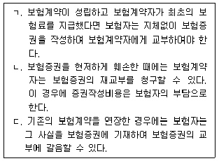
- ㄱ, ㄴ
- ㄱ, ㄷ
- ㄴ, ㄷ
- ㄱ, ㄴ, ㄷ
(정답률: 71%)
14. 보험사고의 객관적 확정의 효과에 관한 설명으로 옳은 것은?
- 보험계약당시에 보험사고가 이미 발생하였더라도 그 계약은 무효로 하지 않는다.
- 보험계약당시에 보험사고가 발생할 수 없는 것이라도 그 계약은 무효로 하지 않는다.
- 보험계약당시에 보험사고가 이미 발생하였지만 보험수익자가 이를 알지 못한 때에는 그 계약은 무효로 하지 않는다.
- 보험계약당시에 보험사고가 발생할 수 없는 것이었지만 당사자 쌍방과 피보험자가 그 사실을 몰랐다면 그 계약은 무효로 하지 않는다.
(정답률: 72%)
15. 보험대리상이 아니면서 특정한 보험자를 위하여 계속적으로 보험계약의 체결을 중개하는 자의 권한을 모두 고른 것은?
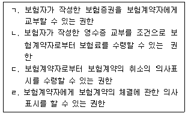
- ㄱ, ㄴ
- ㄱ, ㄷ
- ㄴ, ㄷ
- ㄷ, ㄹ
(정답률: 73%)
16. 임의해지에 관한 설명으로 옳지 않은 것은?
- 보험계약자는 원칙적으로 보험사고가 발생하기 전에는 언제든지 계약의 전부 또는 일부를 해지할 수 있다.
- 보험사고가 발생하기 전이라도 타인을 위한 보험의 경우에 보험계약자는 그 타인의 동의 를 얻지 못하거나 보험증권을 소지하지 않은 경우에는 계약의 전부 또는 일부를 해지할 수 없다.
- 보험사고의 발생으로 보험자가 보험금액을 지급한 때에도 보험금액이 감액되지 아니하는 보험의 경우에는 보험계약자는 그 사고발생후에도 보험계약을 해지할 수 없다.
- 보험사고 발생 전에 보험계약자가 계약을 해지하는 경우, 당사자 사이의 특약으로 미경과 보험료의 반환을 제한할 수 있다.
(정답률: 69%)
17. 보험계약자 甲은 보험자 乙과 손해보험계약을 체결하면서 계약에 관한 사항을 고지하지 않았다. 이에 대한 보험자 乙의 상법상 계약해지권에 관한 설명으로 옳은 것은?
- 甲의 고지의무위반 사실에 대한 乙의 계약해지권은 계약체결일로부터 최대 1년 내에 한하여 행사할 수 있다.
- 乙은 甲의 중과실을 이유로 상법상 보험계약해지권을 행사할 수 없다.
- 乙의 계약해지권은 甲이 고지의무를 위반했다는 사실을 계약당시에 乙이 알 수 있었는지 여부와 상관없이 행사할 수 있다.
- 甲이 고지하지 않은 사실이 계약과 관련하여 중요하지 않은 것이라면 乙은 상법상 고지 의무위반을 이유로 보험계약을 해지할 수 없다.
(정답률: 72%)
18. 보험계약자 甲은 보험자 乙과 보험계약을 체결하면서 일정한 보험료를 매월 균등하게 10년간 지급하기로 약정하였다. 이에 관한 설명으로 옳지 않은 것은?
- 甲은 약정한 최초의 보험료를 계약체결 후 지체없이 납부하여야 한다.
- 甲이 계약이 성립한 후에 2월이 경과하도록 최초의 보험료를 지급하지 아니하면, 그 계약은 법률에 의거해 효력을 상실한다. 이에 관한 당사자 간의 특약은 계약의 효력에 영향을 미치지 않는다.
- 甲이 계속보험료를 약정한 시기에 지급하지 아니하여 乙이 보험계약을 해지하려면 상당한 기간을 정하여 甲에게 최고하여야 한다.
- 甲이 계속보험료를 지급하지 않아서 乙이 계약해지권을 적법하게 행사하였더라도 해지환급금이 지급되지 않았다면 甲은 일정한 기간 내에 연체보험료에 약정이자를 붙여 乙에게 지급하고 그 계약의 부활을 청구할 수 있다.
(정답률: 67%)
19. 위험변경증가와 계약해지에 관한 설명으로 옳은 것을 모두 고른 것은?
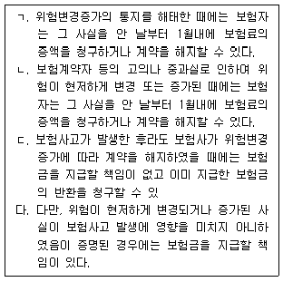
- ㄱ, ㄴ
- ㄱ, ㄷ
- ㄴ, ㄷ
- ㄱ, ㄴ, ㄷ
(정답률: 38%)
20. 다음은 중복보험에 관한 설명이다. ( )에 들어갈 용어로 옳은 것은?
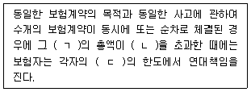
- ㄱ: 보험금액, ㄴ: 보험가액, ㄷ: 보험금액
- ㄱ: 보험금액, ㄴ: 보험가액, ㄷ: 보험가액
- ㄱ: 보험료, ㄴ: 보험가액, ㄷ: 보험금액
- ㄱ: 보험료, ㄴ: 보험금액, ㄷ: 보험금액
(정답률: 65%)
21. 청구권에 관한 소멸시효 기간으로 옳지 않은 것은?
- 보험금청구권: 3년
- 보험료청구권: 3년
- 적립금반환청구권: 3년
- 보험료반환청구권: 3년
(정답률: 70%)
22. 손해보험에 관한 설명으로 옳지 않은 것은?
- 보험자는 보험사고로 인하여 생길 보험계약자의 재산상의 손해를 보상할 책임이 있다.
- 금전으로 산정할 수 있는 이익에 한하여 보험계약의 목적으로 할 수 있다.
- 보험계약의 목적은 상법 보험편 손해보험 장에서 규정하고 있으나 인보험 장에서는 그러하지 아니하다.
- 중복보험의 경우에 보험자 1인에 대한 권리의 포기는 다른 보험자의 권리의무에 영향을 미치지 아니한다.
(정답률: 34%)
23. 손해보험증권의 법정기재사항이 아닌 것은?
- 보험의 목적
- 보험금액
- 보험료의 산출방법
- 무효와 실권의 사유
(정답률: 71%)
24. 초과보험에 관한 설명으로 옳지 않은 것은?
- 보험금액이 보험계약의 목적의 가액을 현저하게 초과한 경우에 성립한다.
- 보험가액이 보험기간 중 현저하게 감소된 때에도 초과보험에 관한 규정이 적용된다.
- 보험계약자 또는 보험자는 보험료와 보험금액의 감액을 청구할 수 있으나 보험료의 감액은 장래에 대하여서만 그 효력이 있다.
- 계약이 보험계약자의 사기로 인하여 체결된 때에는 보험자는 그 사실을 안 날로부터 1월내에 계약을 해지할 수 있다.
(정답률: 59%)
25. 보험가액에 관한 설명으로 옳지 않은 것은?
- 당사자간에 보험가액을 정한 때에는 그 가액은 사고발생시의 가액으로 정한 것으로 추정한다.
- 당사자간에 정한 보험가액이 사고발생시의 가액을 현저하게 초과할 때에는 그 원인에 따라 당사자간에 정한 보험가액과 사고발생시의 가액 중 협의하여 보험가액을 정한다.
- 상법상 초과보험을 판단하는 보험계약의 목적의 가액은 계약당시의 가액에 의하여 정하는 것이 원칙이다.
- 당사자간에 보험가액을 정하지 아니한 때에는 사고발생시의 가액을 보험가액으로 한다.
(정답률: 56%)
2과목: 농어업재해보험법령
26. 농어업재해보험법령상 농림축산식품부장관 또는 해양수산부장관이 재해보험사업을 하려는 자와 재해보험사업의 약정을 체결할 때에 포함되어야 하는 사항이 아닌 것은?
- 약정기간에 관한 사항
- 재해보험사업의 약정을 체결한 자가 준수하여야 할 사항
- 국가에 대한 재정지원에 관한 사항
- 약정의 변경ㆍ해지 등에 관한 사항
(정답률: 59%)
27. 농어업재해보험법상 농어업재해에 관한 설명이다. ( )에 들어갈 내용을 순서대로 옳게 나열한 것은?
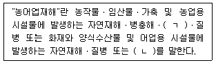
- ㄱ: 지진, ㄴ: 조수해(鳥獸害)
- ㄱ: 조수해(鳥獸害), ㄴ: 풍수해
- ㄱ: 조수해(鳥獸害), ㄴ: 화재
- ㄱ: 지진, ㄴ: 풍수해
(정답률: 69%)
28. 농어업재해보험법령상 농업재해보험심의회 또는 어업재해보험심의회에 관한 설명으로 옳지 않은 것은?
- 심의회는 위원장 및 부위원장 각 1명을 포함한 21명 이내의 위원으로 구성한다.
- 심의회의 위원장은 각각 농림축산식품부장관 및 해양수산부장관으로 하고, 부위원장은 위원 중에서 호선(互選)한다.
- 심의회의 회의는 재적위원 3분의 1 이상의 요구가 있을 때 또는 위원장이 필요하다고 인정할 때에 소집한다.
- 심의회의 회의는 재적위원 과반수의 출석으로 개의(開議)하고, 출석위원 과반수의 찬성으로 의결한다.
(정답률: 70%)
29. 농어업재해보험법령상 보험료율의 산정에 있어서 기준이 되는 행정구역 단위가 아닌 것은?
- 특별시
- 광역시
- 자치구
- 읍ㆍ면
(정답률: 65%)
30. 농어업재해보험법령상 양식수산물재해보험의 손해평가인으로 위촉될 수 있는 자격요건을 갖추지 않은 자는?
- 재해보험 대상 양식수산물을 3년 동안 양식한 경력이 있는 어업인
- 고등교육법 제2조에 따른 전문대학에서 보험 관련 학과를 졸업한 사람
- 수산생물질병 관리법 에 따른 수산질병관리사
- 농수산물 품질관리법 에 따른 수산물품질관리사
(정답률: 67%)
31. 농어업재해보험법령상 재해보험사업에 관한 내용으로 옳지 않은 것은?
- 재해보험의 종류는 농작물재해보험, 임산물재해보험, 가축재해보험 및 양식수산물재해보험으로 한다.
- 재해보험에서 보상하는 재해의 범위는 해당 재해의 발생 범위, 피해 정도 및 주관적인 손해평가방법 등을 고려하여 재해보험의 종류별로 대통령령으로 정한다.
- 정부는 재해보험에서 보상하는 재해의 범위를 확대하기 위하여 노력하여야 한다.
- 가축재해보험에서 보상하는 재해의 범위는 자연재해, 화재 및 보험목적물별로 농림축산식품부장관이 정하여 고시하는 질병이다.
(정답률: 65%)
32. 농어업재해보험법상 손해평가사의 감독에 관한 내용이다. ( )에 들어갈 숫자는?
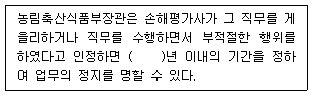
- 1
- 2
- 3
- 5
(정답률: 69%)
33. 농어업재해보험법상 손해평가사의 자격 취소사유로 명시되지 않은 것은?(관련 규정 개정전 문제로 여기서는 기존 정답인 2번을 누르면 정답 처리됩니다. 자세한 내용은 해설을 참고하세요.)
- 손해평가사의 자격을 거짓 또는 부정한 방법으로 취득한 사람
- 업무정지 기간 중에 손해평가업무를 수행한 사람
- 거짓으로 손해평가를 한 사람
- 다른 사람에게 손해평가사의 업무를 수행하게 하거나 자격증을 빌려준 사람
(정답률: 38%)
34. 농어업재해보험법령상 재정지원에 관한 설명으로 옳은 것은?
- 정부는 예산의 범위에서 재해보험사업자가 지급하는 보험금의 일부를 지원할 수 있다.
- 풍수해보험법 에 따른 풍수해보험에 가입한 자가 동일한 보험목적물을 대상으로 재해보험에 가입할 경우에는 정부가 재정지원을 하여야 한다.
- 재해보험의 운영에 필요한 지원금액을 지급받으려는 재해보험사업자는 농림축산식품부장관 또는 해양수산부장관이 정하는 바에 따라 재해보험 가입현황서나 운영비 사용계획서를 농림축산식품부장관 또는 해양수산부장관에게 제출하여야 한다.
- 농림축산식품부장관ㆍ해양수산부장관이 예산의 범위에서 지원하는 재정지원의 경우 그 지원 금액을 재해보험가입자에게 지급하여야 한다.
(정답률: 62%)
35. 농어업재해보험법상 분쟁조정에 관한 내용이다. ( )에 들어갈 법률로 옳은 것은?
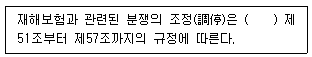
- 보험업법
- 풍수해보험법
- 금융위원회의 설치 등에 관한 법률
- 화재로 인한 재해보상과 보험가입에 관한 법률
(정답률: 56%)
36. 농업재해보험 손해평가요령상 용어의 정의로 옳지 않은 것은?
- "농업재해보험"이란 「농어업재해보험법」 제4조에 따른 농작물재해보험, 임산물재해보험 및 양식수산물재해보험을 말한다.
- "손해평가인"이라 함은 「농어업재해보험법」 제11조 제1항과 「농어업재해보험법 시행령」 제12조 제1항에서 정한 자 중에서 재해보험사업자가 위촉하여 손해평가업무를 담당하는 자를 말한다.
- "손해평가보조인"이라 함은 「농어업재해보험법」 에 따라 손해평가인, 손해평가사 또는 손해사정사가 그 피해사실을 확인하고 평가하는 업무를 보조하는 자를 말한다.
- "손해평가사"라 함은 「농어업재해보험법」에 제11조의4 제1항에 따른 자격시험에 합격한 자를 말한다.
(정답률: 71%)
37. 농어업재해보험법령상 농어업재해보험기금을 조성하기 위한 재원으로 옳지 않은 것은? (문제 오류로 가답안 발표시 4번으로 발표되었으나, 확정답안 발표시 모두 정답처리 되었습니다. 여기서는 가답안인 4번을 누르면 정답 처리 됩니다.)
- 재해보험사업자가 정부에 낸 보험료
- 재보험금의 회수 자금
- 기금의 운용수익금과 그 밖의 수입금
- 재해보험가입자가 약정에 따라 재해보험사업자에게 내야 하는 금액
(정답률: 68%)
38. 농어업재해보험법령상 시범사업의 실시에 관한 설명으로 옳은 것은?
- 기획재정부장관이 신규 보험상품을 도입하려는 경우 재해보험사업자와의 협의를 거치지 않고 시범사업을 할 수 있다.
- 재해보험사업자가 시범사업을 하려면 사업계획서를 농림축산식품부장관에게 제출하고 기획재정부장관과 협의하여야 한다.
- 재해보험사업자는 시범사업이 끝나면 정부의 재정지원에 관한 사항이 포함된 사업결과 보고서를 제출하여야 한다.
- 농림축산식품부장관 또는 해양수산부장관은 시범사업의 사업결과보고서를 받으면 그 사업 결과를 바탕으로 신규 보험상품의 도입 가능성 등을 검토ㆍ평가하여야 한다.
(정답률: 60%)
39. 농어업재해보험법령상 농림축산식품부장관이 해양수산부장관과 협의하여 농어업재해재보험기금의 수입과 지출에 관한 사무를 수행하게 하기 위하여 소속 공무원 중에서 임명하는 자에 해당하지 않는 것은?
- 기금수입징수관
- 기금출납원
- 기금지출관
- 기금재무관
(정답률: 57%)
40. 농어업재해보험법령상 농림축산식품부장관 또는 해양수산부장관으로부터 보험상품의 운영 및 개발에 필요한 통계자료의 수집ㆍ관리업무를 위탁받아 수행할 수 있는 자를 모두 고른 것은?
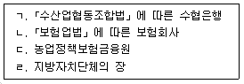
- ㄱ, ㄴ
- ㄴ, ㄷ
- ㄷ, ㄹ
- ㄱ, ㄴ, ㄷ
(정답률: 58%)
41. 농어업재해보험법령상 고의로 진실을 숨기거나 거짓으로 손해평가를 한 손해평가인과 손해평가사에게 부과될 수 있는 벌칙이 아닌 것은?
- 징역 6월
- 과태료 2,000만 원
- 벌금 500만 원
- 벌금 1,000만 원
(정답률: 53%)
42. 농업재해보험 손해평가요령상 손해평가인의 위반행위 중 1차 위반행위에 대한 개별 처분기준의 종류가 다른 것은?
- 고의로 진실을 숨기거나 거짓으로 손해평가를 한 경우
- 검증조사 결과 부당ㆍ부실 손해평가로 확인된 경우
- 현장조사 없이 보험금 산정을 위해 손해평가행위를 한 경우
- 정당한 사유없이 손해평가반 구성을 거부하는 경우
(정답률: 40%)
43. 농어업재해보험법령상 재해보험사업자가 재해보험사업을 원활히 수행하기 위하여 재해보험 업무의 일부를 위탁할 수 있는 자에 해당하지 않는 것은?
- 「농업협동조합법」에 따라 설립된 지역농업협동조합ㆍ지역축산업협동조합 및 품목별ㆍ업종별 협동조합
- 「산림조합법」에 따라 설립된 지역산림조합 및 품목별ㆍ업종별산림조합
- 「보험업법」 제187조에 따라 손해사정을 업으로 하는 자
- 농어업재해보험 관련 업무를 수행할 목적으로 「민법」 제32조에 따라 기획재정부장관의 허가를 받아 설립된 영리법인
(정답률: 63%)
44. 농업재해보험 손해평가요령상 손해평가에 관한 설명으로 옳지 않은 것은?
- 교차손해평가에 있어서도 평가인력 부족 등으로 신속한 손해평가가 불가피하다고 판단되는 경우에는 손해평가반구성에 지역손해평가인을 배제할 수 있다.
- 손해평가 단위와 관련하여 농지란 하나의 보험가입금액에 해당하는 토지로 필지(지번) 등과 관계없이 농작물을 재배하는 하나의 경작지를 말한다.
- 손해평가반이 손해평가를 실시할 때에는 재해보험사업자가 해당 보험가입자의 보험계약사항 중 손해평가와 관련된 사항을 해당 지방자치단체에 통보하여야 한다.
- 보험가입자가 정당한 사유없이 검증조사를 거부하는 경우 검증조사반은 검증조사가 불가능하여 손해평가 결과를 확인할 수 없다는 사실을 보험가입자에게 통지한 후 검증조사결과를 작성하여 재해보험사업자에게 제출하여야 한다.
(정답률: 59%)
45. 농업재해보험 손해평가요령상 종합위험방식 상품(농업수입보장 포함)의 수확 전생육시기에 “오디”의 과실손해조사 시기로 옳은 것은?
- 결실완료 후
- 수정완료 후
- 조사가능일
- 사고접수 후 지체 없이
(정답률: 54%)
46. 농업재해보험 손해평가요령 제10조(손해평가준비 및 평가결과 제출)의 일부이다. ( )에 들어갈 내용을 순서대로 옳게 나열한 것은?
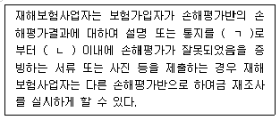
- ㄱ: 받은 날, ㄴ: 7일
- ㄱ: 받은 다음 날, ㄴ: 7일
- ㄱ: 받은 날, ㄴ: 10일
- ㄱ: 받은 다음 날, ㄴ: 10일
(정답률: 67%)
47. 농업재해보험 손해평가요령상 “손해평가업무방법서” 및 “농업재해보험 손해평가요령의 재검토기한”에 관한 설명이다. ( )에 들어갈 내용을 순서대로 옳게 나열한 것은?
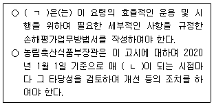
- ㄱ: 손해평가반, ㄴ: 2년
- ㄱ: 재해보험사업자, ㄴ: 2년
- ㄱ: 손해평가반, ㄴ: 3년
- ㄱ: 재해보험사업자, ㄴ: 3년
(정답률: 65%)
48. 농업재해보험 손해평가요령상 농작물의 보험가액 산정에 관한 설명으로 옳지 않은 것을 모두 고른 것은?
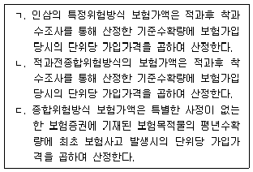
- ㄱ
- ㄷ
- ㄱ, ㄷ
- ㄴ, ㄷ
(정답률: 37%)
49. 농어업재해보험법령과 농업재해보험 손해평가요령상 손해평가 및 손해평가인에 관한 설명으로 옳지 않은 것은?
- 농어업재해보험법의 구성 및 조문별 주요내용은 농림축산식품부장관 또는 해양수산부장관이 실시하는 손해평가인 정기교육의 세부내용에 포함된다.
- 손해평가인이 적법한 절차에 따라 위촉이 취소된 후 3년이 되었다면 새로이 손해평가인으로 위촉될 수 있다.
- 재해보험사업자로부터 소정의 절차에 따라 손해평가 업무의 일부를 위탁받은 자는 손해평가보조인을 운용할 수 없다.
- 재해보험사업자는 손해평가인의 업무의 정지를 명하고자 하는 때에는 손해평가인이 청문에 응하지 않는 경우가 아닌 한 청문을 실시하여야 한다.
(정답률: 66%)
50. 농업재해보험 손해평가요령상 적과전종합위험방식 상품(사과, 배, 단감, 떫은감)의 「6월 1일 ∼ 적과전」 생육시기에 해당되는 재해가 아닌 것은? (단, 적과종료 이전 특정 위험 5종 한정 보장 특약 가입건에 한함)
- 일소
- 화재
- 지진
- 강풍
(정답률: 63%)
3과목: 재배학 및 원예작물학
51. 인과류에 해당하는 것은?
- 과피가 밀착ㆍ건조하여 껍질이 딱딱해진 과실
- 성숙하면서 씨방벽 전체가 다육질로 되는 과즙이 많은 과실
- 과육의 내부에 단단한 핵을 형성하여 이 속에 종자가 있는 과실
- 꽃받기의 피층이 발달하여 과육 부위가 되고 씨방은 과실 안쪽에 위치하여 과심 부위가 되는 과실
(정답률: 60%)
52. 산성 토양에 관한 설명으로 옳은 것은?
- 토양 용액에 녹아 있는 수소 이온은 치환 산성 이온이다.
- 석회를 시용하면 산성 토양을 교정할 수 있다.
- 토양 입자로부터 치환성 염기의 용탈이 억제되면 토양이 산성화된다.
- 콩은 벼에 비해 산성 토양에 강한 편이다.
(정답률: 62%)
53. 작물 생육에 영향을 미치는 토양 환경에 관한 설명으로 옳지 않은 것은?
- 유기물을 투입하면 지력이 증진된다.
- 사양토는 점토에 비해 통기성이 낮다.
- 토양이 입단화되면 보수성과 통기성이 개선된다.
- 깊이갈이를 하면 토양의 물리성이 개선된다.
(정답률: 70%)
54. 가뭄이 지속될 때 작물의 잎에 나타날 수 있는 특징으로 옳지 않은 것은?
- 엽면적이 감소한다.
- 증산이 억제된다.
- 광합성이 촉진된다.
- 조직이 치밀해진다.
(정답률: 66%)
55. A농가가 작물에 나타나는 토양 습해를 줄이기 위해 실시할 수 있는 대책으로 옳은 것을 모두 고른 것은?
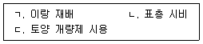
- ㄱ, ㄴ
- ㄱ, ㄷ
- ㄴ, ㄷ
- ㄱ, ㄴ, ㄷ
(정답률: 53%)
56. A농가가 과수 작물 재배 시 동해를 예방하기 위해 실시할 수 있는 조치가 아닌 것은?
- 과실 수확 전 토양에 질소를 시비한다.
- 과다하게 결실이 되지 않도록 적과를 실시한다.
- 배수 관리를 통해 토양의 과습을 방지한다.
- 강전정을 피하고 분지 각도를 넓게 한다.
(정답률: 64%)
57. 작물 생육의 일정한 시기에 저온을 경과해야 개화가 일어나는 현상은?
- 경화
- 순화
- 춘화
- 분화
(정답률: 67%)
58. 벼와 옥수수의 광합성을 비교한 내용으로 옳지 않은 것은?
- 옥수수는 벼에 비해 광 포화점이 높은 광합성 특성을 보인다.
- 옥수수는 벼에 비해 온도가 높을수록 광합성이 유리하다.
- 옥수수는 벼에 비해 이산화탄소 보상점이 높은 광합성 특성을 보인다.
- 옥수수는 벼에 비해 수분 공급이 제한된 조건에서 광합성이 유리하다.
(정답률: 51%)
59. 종자나 눈이 휴면에 들어가면서 증가하는 식물 호르몬은?
- 옥신(auxin)
- 시토키닌(cytokinin)
- 지베렐린(gibberellin)
- 아브시스산(abscisic acid)
(정답률: 49%)
60. 과수 작물의 조류(鳥類) 피해 방지 대책으로 옳지 않은 것은?
- 방조망 설치
- 페로몬 트랩 설치
- 폭음기 설치
- 광 반사물 설치
(정답률: 70%)
61. 강풍으로 인해 작물에 나타나는 생리적 반응을 모두 고른 것은?
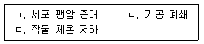
- ㄱ, ㄴ
- ㄱ, ㄷ
- ㄴ, ㄷ
- ㄱ, ㄴ, ㄷ
(정답률: 54%)
62. 육묘용 상토에 이용하는 경량 혼합 상토 중 유기물 재료는?
- 버미큘라이트(vermiculite)
- 피트모스(peatmoss)
- 펄라이트(perlite)
- 제올라이트(zeolite)
(정답률: 50%)
63. 작물을 육묘한 후 이식 재배하여 얻을 수 있는 효과를 모두 고른 것은?
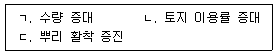
- ㄱ, ㄴ
- ㄱ, ㄷ
- ㄴ, ㄷ
- ㄱ, ㄴ, ㄷ
(정답률: 53%)
64. 다음 ( )에 들어갈 내용으로 옳은 것은?
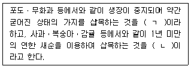
- ㄱ: 신초삽, ㄴ: 숙지삽
- ㄱ: 신초삽, ㄴ: 일아삽
- ㄱ: 숙지삽, ㄴ: 일아삽
- ㄱ: 숙지삽, ㄴ: 신초삽
(정답률: 61%)
65. 형태에 따른 영양 번식 기관과 작물이 바르게 짝지어진 것은?
- 괴경 - 감자
- 인경 - 글라디올러스
- 근경 - 고구마
- 구경 - 양파
(정답률: 53%)
66. A농가가 요소 엽면 시비를 하고자 하는 이유가 아닌 것은?
- 신속하게 영양을 공급하여 작물 생육을 회복시키고자 할 때
- 토양 해충의 피해를 받아 뿌리의 기능이 크게 저하되었을 때
- 강우 등으로 토양의 비료 성분이 유실되었을 때
- 작물의 생식 생장을 촉진하고자 할 때
(정답률: 57%)
67. 해충 방제에 이용되는 천적을 모두 고른 것은?
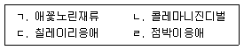
- ㄱ, ㄹ
- ㄱ, ㄴ, ㄷ
- ㄴ, ㄷ, ㄹ
- ㄱ, ㄴ, ㄷ, ㄹ
(정답률: 48%)
68. 세균에 의해 작물에 발생하는 병해는?
- 궤양병
- 탄저병
- 역병
- 노균병
(정답률: 51%)
69. 시설 내에서 광 부족이 지속될 때 나타날 수 있는 박과 채소 작물의 생육 반응은?
- 낙화 또는 낙과의 발생이 많아진다.
- 잎이 짙은 녹색을 띤다.
- 잎이 작고 두꺼워진다.
- 줄기의 마디 사이가 짧고 굵어진다.
(정답률: 58%)
70. 백합과에 속하는 다년생 작물로 순을 이용하는 채소는?
- 셀러리
- 아스파라거스
- 브로콜리
- 시금치
(정답률: 59%)
71. 사과 과실에 봉지씌우기를 하여 얻을 수 있는 효과를 모두 고른 것은?
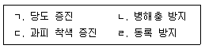
- ㄱ, ㄴ, ㄷ
- ㄱ, ㄴ, ㄹ
- ㄱ, ㄷ, ㄹ
- ㄴ, ㄷ, ㄹ
(정답률: 51%)
72. 과실의 수확 적기를 판정하는 항목으로 옳은 것을 모두 고른 것은?
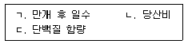
- ㄱ, ㄴ
- ㄱ, ㄷ
- ㄴ, ㄷ
- ㄱ, ㄴ, ㄷ
(정답률: 49%)
73. 절화의 수확 및 수확 후 관리 기술에 관한 설명으로 옳지 않은 것은?
- 스탠더드 국화는 꽃봉오리가 1/2 정도 개화하였을 때 수확하여 출하한다.
- 장미는 조기에 수확할수록 꽃목굽음이 발생하기 쉽다.
- 글라디올러스는 수확 후 눕혀서 저장하면 꽃이 구부러지지 않는다.
- 카네이션은 수확 후 에틸렌 작용 억제제를 사용하면 절화 수명을 연장할 수 있다.
(정답률: 53%)
74. 토양 재배에 비해 무토양 재배의 장점이 아닌 것은?
- 배지의 완충능이 높다.
- 연작 재배가 가능하다.
- 자동화가 용이하다.
- 청정 재배가 가능하다.
(정답률: 60%)
75. 시설 내의 환경 특이성에 관한 설명으로 옳지 않은 것은?
- 위치에 따라 온도 분포가 다르다.
- 위치에 따라 광 분포가 불균일하다.
- 노지에 비해 토양의 염류 농도가 낮아지기 쉽다.
- 노지에 비해 토양이 건조해지기 쉽다.
(정답률: 59%)